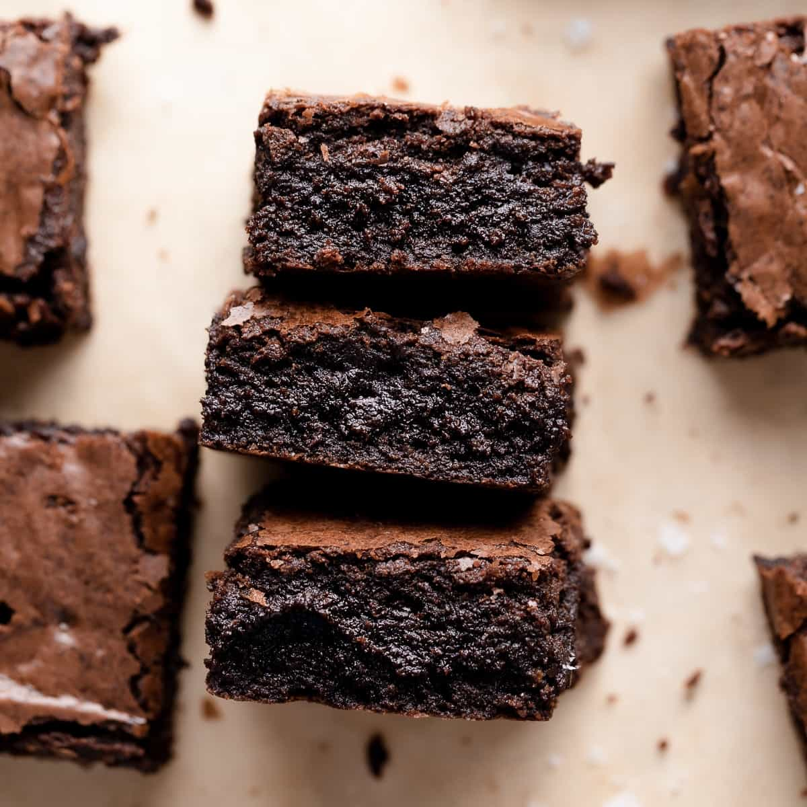

Brownies Recipe

espresso Brownies
Description
Ingredients
- 1/2 cup all-purpose flour
- 2 tablespoons espresso powder
- 1/8 teaspoon baking powder
- 1/8 teaspoon salt
- 1 cup white sugar
- /2 cup butter, softened
- 2 large eggs
- 2 ounces unsweetened baking chocolate, melted
- 1/2 teaspoon vanilla extract
- cup chopped walnuts (optional)
Directions
- Preheat the oven to 325 degrees F (165 degrees C). Grease an 11x7-inch baking pan.
Sift flour, espresso powder, baking powder, and salt together in a bowl.
- Beat sugar and butter together in a large bowl with an electric mixer until light and fluffy.
Beat in eggs until smooth batter forms; beat in chocliate and vanilla extract.
Stir flour mixture in just until incorporated; flid in walnuts. Spread batter into prepared pan.
- Bake in the preheated oven until top is dry and edges have started to plil away from the sides of the pan, 35 to 40 minutes.
Coli completely before cutting.